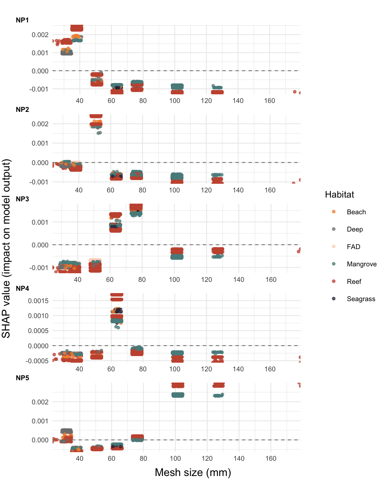

5 Timor SSF nutrient profiles
5.1 Methods
In this section, we identified recurrent nutritional profiles based on RC data, then, we aimed to predict the nutritional profiles on the basis of the fishing strategy and environmental factors.
5.1.1 Data analysis design and subset division
As a first step we addressed the inherent imbalance in the RC data, a critical aspect for ensuring accurate and unbiased analysis. Notably, a substantial portion of the data, exceeding 40%, is from Atauro, with gill net being the most frequently reported gear type across all the municipalities. To mitigate the skew caused by this overrepresentation, we strategically divided the dataset into four distinct subsets:
Atauro GN: Focused on data from Atauro using gill nets.
Atauro AG: Included data from Atauro using fishing methods other than gill nets.
Mainland GN: Comprised of gill net data from all municipalities excluding Atauro.
Mainland AG: Encompassed data from all other municipalities using non-gill net fishing methods.
This subdivision of the dataset was intended to reduce biases and enhance analytical precision. Furthermore, by isolating gill net data, we were able to specifically examine the impact of mesh size on the prediction of nutrient profiles in gill net catches, providing a more focused and detailed analysis of this gear type’s influence on nutritional outcomes.
Subsequently, we identified recurrent nutritional profiles for each dataset. We assessed the total within sum of square (WSS) of six nutrient concentrations—excluding selenium—to identify the optimal number of clusters (distinctive nutritional profiles). This methodology helped determine the point at which additional data points do not significantly enhance the clarity of the clusters.
Once established the optimal number of clusters for each dataset, we proceeded with the K-means clustering method to organize the data into distinct groups based on similarities in nutrient concentrations. Each trip was grouped based on its nutrient concentration profile, thereby enabling us to discern patterns and categorize trips according to their nutritional value. The K-means algorithm functions by assigning each data point to the nearest cluster, based on the mean value of the points in the cluster. This iterative process continues until the assignment of points to clusters no longer changes, indicating that the clusters are as distinct as possible. The result is a set of clusters that represent unique nutritional profiles, each characterized by a specific combination of nutrient concentrations.
Subsequent to the clustering, we conducted Permutational Multivariate Analysis of Variance (PERMANOVA) to validate the clustering methodology across four distinct datasets: Atauro AG, Atauro GN, Mainland AG, and Mainland GN. PERMANOVA is a robust non-parametric statistical test that evaluates whether there are significant differences between groups. Unlike traditional ANOVA, PERMANOVA does not rely on assumptions of normality and is therefore suitable for ecological data, which often do not follow normal distributions. Our PERMANOVA analysis was conducted on each of the four subsets on a distance matrix representing pairwise dissimilarities in nutrient concentrations across all fishing trips. This approach allowed us to test the hypothesis that the nutrient profiles of fishing trips within the same cluster are more similar to each other than to trips in different clusters.
Finally, we performed a XGBoost model to each data subset to predict the nutritional profiles based on the fishing strategy, habitat and season. We employed the XGBoost algorithm due to its effectiveness in preventing overfitting and its ability to highlight key predictors. We used mesh size, habitat, quarter of the year, and vessel type as predictors for gill net subsets. For other gear types, the models used habitat x gear interaction, habitat, gear type, quarter of the year, and vessel type as predictors.
Model tuning was conducted dynamically, adjusting parameters the number of trees, tree depth, loss reduction, sample size, and early stopping. The 4 data subsets were split into training (80%) and testing (20%) sets, with 10-fold cross-validation applied to the training set for enhanced accuracy and generalizability.
The model’s performance was assessed using accuracy, ROC AUC, sensitivity, and specificity, providing a comprehensive understanding of its ability to accurately distinguish between different nutritional profiles. The ROC curves and AUC values offered an additional layer of model effectiveness evaluation.
5.2 Results
5.2.1 Clusters (not updated)
The WSS analysis indicated a number of 4 or 5 as optimal number of clusters for each data subset. We choose 5 clusters for all the subsets to keep consistency among the subsequent analyses and to capture more complexity in nutrient profiles’ patterns.
The scatter plot from the k-means clustering (Figure 5.1) showed the distribution of nutrient profiles across different clusters in each data subset. The first two principal components explained a significant portion of the variance, indicating distinct groupings in nutrient profiles among the fishing trips. The clear separation of clusters in this plot suggests that the fishing trips could be effectively categorized based on their nutrient content. The bar chart (Figure 5.2) displaying nutrient adequacy across clusters indicated the number of individuals meeting the Recommended Nutrient Intake (RNI) per 1kg of catch for various nutrients. The segmentation of bars into different nutrients (calcium, iron, omega-3, protein, vitamin A, zinc) across clusters showed variation in nutritional fulfillment. This suggests that different fishing strategies, represented by different clusters, result in catches with varying nutritional values.

Figure 5.1: Cluster analysis of nutrient profiles using k-means clustering. The scatter plot visualizes the distribution of data points in a two-dimensional space defined by the first two principal components. The convex hulls represent the boundaries of each cluster, providing a visual guide to the cluster density and separation.
![Distribution of nutrient adequacy across k-means clusters. The bar chart represents the number of individuals meeting the Recommended Nutrient Intake (RNI) per 1kg of catch for each nutrient within different clusters. Each bar is segmented into six categories corresponding to the nutrients analyzed: calcium (dark purple), iron (blue), omega-3 (green), protein (teal), vitamin A (dark teal), and zinc (yellow). Clusters are labeled on the y-axis, indicating distinct groupings based on nutrient profile similarities derived from the cluster analysis. The x-axis quantifies the number of individuals who meet the RNI, highlighting the variation in nutritional fulfillment across clusters.](Timor-nutrient-sensitive-fisheries-management_files/figure-html/unnamed-chunk-5-1.png)
Figure 5.2: Distribution of nutrient adequacy across k-means clusters. The bar chart represents the number of individuals meeting the Recommended Nutrient Intake (RNI) per 1kg of catch for each nutrient within different clusters. Each bar is segmented into six categories corresponding to the nutrients analyzed: calcium (dark purple), iron (blue), omega-3 (green), protein (teal), vitamin A (dark teal), and zinc (yellow). Clusters are labeled on the y-axis, indicating distinct groupings based on nutrient profile similarities derived from the cluster analysis. The x-axis quantifies the number of individuals who meet the RNI, highlighting the variation in nutritional fulfillment across clusters.
The PERMANOVA analyses (see table below) revealed statistically significant differences between clusters, suggesting robust groupings based on the nutrient profiles. The pseudo-F statistics were remarkably high in all cases, indicating strong differentiation between clusters. Specifically, the R² values were 0.86, 0.82, 0.85, and 0.92 for Atauro AG, Atauro GN, Mainland AG, and Mainland GN respectively, indicating that between 82% to 92% of the variance in nutrient concentrations was explained by the clusters. The high R² values underscore the distinctness of the clusters, reinforcing the validity of the K-means clustering.
These findings were consistent across all the datasets, with p-values below 0.001, providing clear evidence to reject the null hypothesis of no difference between clusters. Hence, the PERMANOVA results robustly support the effectiveness of the K-means algorithm in capturing meaningful patterns in nutrient profiles.
5.2.2 XGBoost model (not updated)
The models’ predictive capacity was quantitatively assessed via receiver operating characteristic (ROC) analysis across five distinct clusters. The ROC curves (see ML model interpretation) illustrate a differential capacity of the model to classify each cluster based on the nutritional profiles derived from various fishing strategies. Cluster 2 and 5 demonstrated superior model performance, indicated by a curve proximate to the top-left, suggesting high sensitivity and specificity. Clusters 1 and 4 showed marginally lower but comparable discrimination ability. Cluster 3 indicated a slight decrease in sensitivity and exhibited the model’s lowest performance, with a curve markedly farther from the ideal top-left position. Collectively, an aggregate AUC of 0.87 signifies a strong overall ability of the model to differentiate between the clusters, albeit with varying degrees of precision. These findings underscore the model’s effectiveness in predicting nutritional outcomes based on fishing strategies, with implications for tailoring nutrient-sensitive fisheries management interventions.
![Receiver Operating Characteristic (ROC) Curves with Data Points for Cluster-Based Classification. The curves delineate the sensitivity versus 1-specificity for the five clusters derived from the XGBoost classification model. Each cluster is represented by a distinct color with data points marked, which illustrates the true positive rate against the false positive rate for each respective cluster. The closeness of each curve to the top-left corner indicates the model’s classification efficacy per cluster, with Cluster 1 and 2 showing the highest performance. The overall model demonstrates substantial predictive accuracy with a composite AUC value of 0.86.](Timor-nutrient-sensitive-fisheries-management_files/figure-html/model-settings-1.png)
Figure 5.3: Receiver Operating Characteristic (ROC) Curves with Data Points for Cluster-Based Classification. The curves delineate the sensitivity versus 1-specificity for the five clusters derived from the XGBoost classification model. Each cluster is represented by a distinct color with data points marked, which illustrates the true positive rate against the false positive rate for each respective cluster. The closeness of each curve to the top-left corner indicates the model’s classification efficacy per cluster, with Cluster 1 and 2 showing the highest performance. The overall model demonstrates substantial predictive accuracy with a composite AUC value of 0.86.
Accuracy metrics

5.4 Next steps
Explore the model:
Quantify the importance of each predictor on the model outcome
Assess the direction of the effect of each predictor, that is analyze which features have the most impact on driving predictions towards each cluster. SHAP Values are a good way to address that.